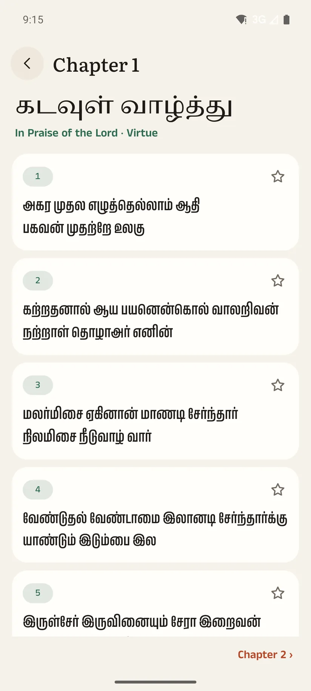

Read it, then write
கற்க கசடறக் கற்பவை கற்றபின்
நிற்க அதற்குத் தக
- Each couplet in Tamil, always flush left, with Aiyar's and Pope's English
- A pronunciation line under each one, simple or scholarly (ISO 15919), for readers new to Tamil
- A question for the mind, for speech and for action
